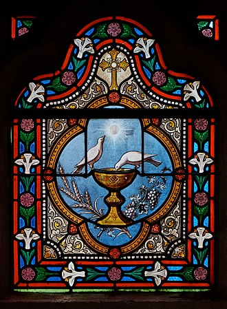
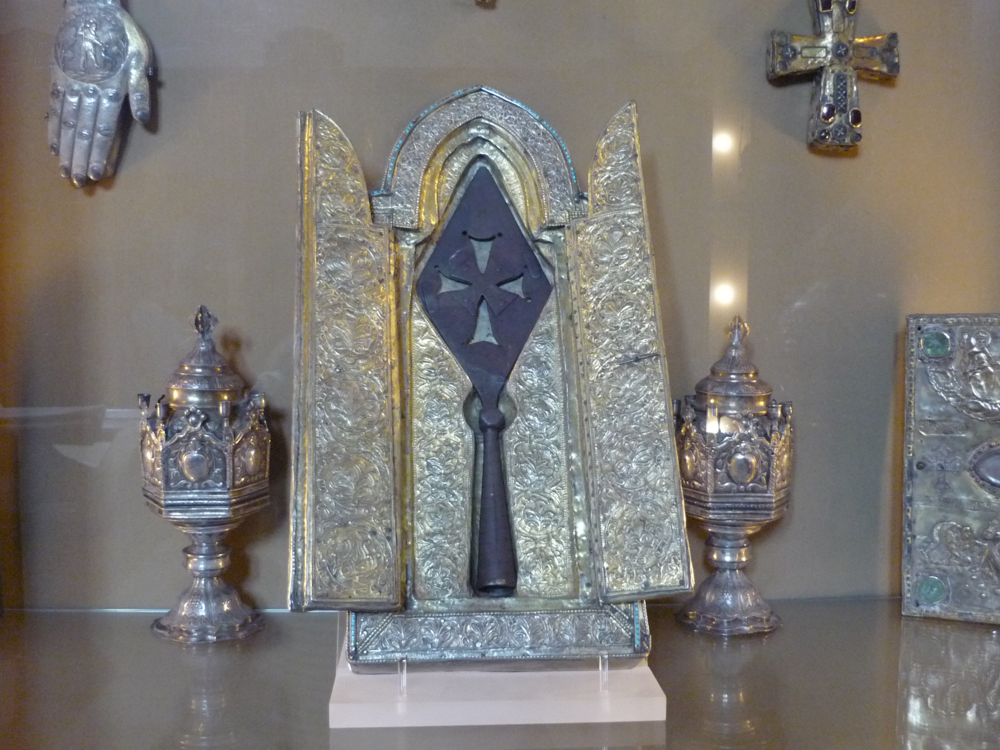
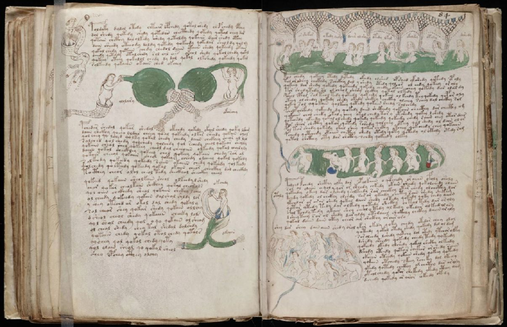

Mysterious Relics
The Holy Grail

The Holy Grail, often depicted as a chalice, is a legendary relic tied to Christian and esoteric traditions. In medieval Arthurian legend, it’s the cup used by Jesus at the Last Supper, sought by the Knights of the Round Table. Esoteric traditions link it to Hermetic wisdom, seeing it as a symbol of spiritual enlightenment and the quest for divine knowledge.
Did You Know? Some theories suggest the Grail is not a physical object but a metaphor for hidden wisdom, a concept embraced by alchemists.
The Spear of Destiny

The Spear of Destiny, also known as the Lance of Longinus, is said to be the spear that pierced Jesus’ side during the Crucifixion. Esoteric traditions attribute it with immense power, believing it grants its wielder the ability to control fate. The spear has been linked to figures like Charlemagne and even Adolf Hitler, who sought it for its supposed mystical properties.
Fun Fact: The spear is currently housed in the Hofburg Palace in Vienna, but its authenticity remains debated.
The Voynich Manuscript

The Voynich Manuscript, a 15th-century codex, is one of the most enigmatic relics in history. Written in an unknown script with illustrations of plants, astronomical diagrams, and mysterious figures, it has defied decryption for centuries. Some believe it’s an alchemical or Hermetic text, while others think it’s a hoax.
Did You Know? The manuscript is named after Wilfrid Voynich, who acquired it in 1912, and is now held at Yale University’s Beinecke Rare Book & Manuscript Library.
Which Relic Holds Your Destiny?
Choose your path: